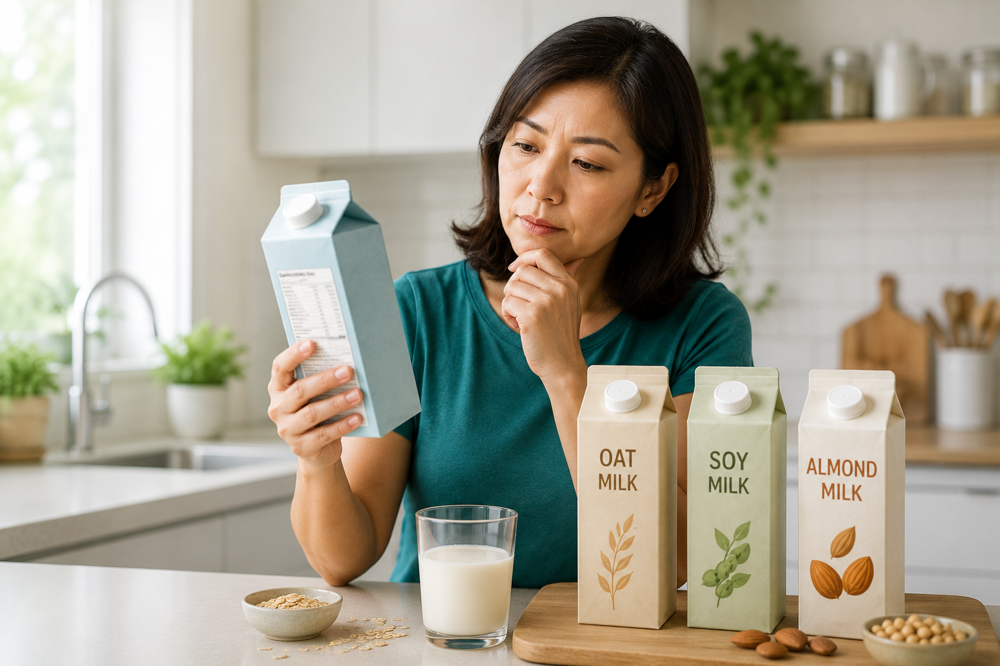

“Plant-based” does not automatically mean “kidney-safe.”Ang “plant-based” ay hindi awtomatikong nangangahulugang “ligtas sa bato.”Ang “plant-based” dili awtomatiko nga nagpasabot nga “luwas sa kidney.”Ing “plant-based” ali ne awtomatikong buri nang sabian “ligtas king bato.”

If you have chronic kidney disease (CKD) and you switched from cow's milk to almond, oat, or coconut milk because it felt “healthier for the kidneys,” you made a reasonable-sounding choice — but you may have solved the wrong problem. The words on the front of the pack (“plant-based,” “dairy-free,” “natural”) tell you what the milk is made from. They tell you almost nothing about whether it is safe for your kidneys.Kung mayroon kang chronic kidney disease (CKD, malalang sakit sa bato) at lumipat ka mula sa gatas ng baka patungong almond, oat, o coconut milk dahil pakiramdam mong “mas malusog para sa bato,” makatuwiran ang pinili mo — ngunit maaaring mali ang problemang nalutas mo. Ang mga salita sa harap ng pakete (“plant-based,” “dairy-free,” “natural”) ay nagsasabi kung saan gawa ang gatas. Halos wala silang sinasabi tungkol sa kung ligtas ba ito para sa iyong bato.Kung naa kay chronic kidney disease (CKD, grabe nga sakit sa kidney) ug nibalhin ka gikan sa gatas sa baka ngadto sa almond, oat, o coconut milk kay gibati nimo nga “mas himsog para sa kidney,” makatarunganon ang imong pagpili — apan tingali sayop nga problema ang imong nasulbad. Ang mga pulong sa atubangan sa pakete (“plant-based,” “dairy-free,” “natural”) nagsulti kung unsa ang gigikanan sa gatas. Halos walay ilang gisulti kung luwas ba kini sa imong kidney.Nung atin kang chronic kidney disease (CKD, maragul a sakit king bato) at linipat ka ibat king gatas ning baka papunta king almond, oat, o coconut milk uling pakiramdam mu “mas masalese ya para king bato,” makatuliran ing pemili mu — dapot mesalanan ya tiyang ing problemang meyari mu. Reng amanu king arap na ning pakete (“plant-based,” “dairy-free,” “natural”) sasabian da nu gawa ing gatas. Halos ala lang sasabian nung ligtas ya para king bato mu.
The one idea to carry through this whole guide: what matters for your kidneys is not the plant the milk started as — it is what the factory added to it. Two cartons of almond milk sitting side by side can be worlds apart in kidney risk, depending only on the ingredient list.Ang isang ideyang dapat dalhin sa buong giyang ito: ang mahalaga para sa iyong bato ay hindi ang halamang pinagmulan ng gatas — kundi kung ano ang idinagdag ng pabrika dito. Dalawang karton ng almond milk na magkatabi ay maaaring magkalayo sa panganib sa bato, depende lamang sa listahan ng sangkap.Ang usa ka ideya nga dad-on sa tibuok niini nga giya: ang importante para sa imong kidney dili ang tanom nga gigikanan sa gatas — kundi kung unsa ang gidugang sa pabrika niini. Duha ka karton sa almond milk nga magtapad mahimong layo kaayo sa peligro sa kidney, depende lang sa lista sa sangkap.Ing metung a ideyang dapat dalan king mabilug a gabay a ini: ing mahalaga para king bato mu ali ya ing tanaman a pengibatan na ning gatas — nune nanu ing dinagdag na ning pabrika kaniti. Aduang karton na ning almond milk a makasiping malyaring marayu la king panganib king bato, depende ya mu king listahan da reng sangkap.
There are three hidden variables, and none of them are printed on the front: added phosphate (a fortifier your kidneys cannot ignore), natural plant compounds such as oxalate in almonds or arsenic in rice, and nutrient mismatches like a quiet loss of protein. We will take them one at a time — and by the end you will be able to hold up any carton and screen it yourself.May tatlong nakatagong salik, at wala ni isa sa kanila ang nakalimbag sa harap: idinagdag na phosphate (isang fortifier na hindi maaaring balewalain ng iyong bato), likas na sangkap ng halaman tulad ng oxalate sa almond o arsenic sa bigas, at hindi tugmang nutrisyon gaya ng tahimik na pagkawala ng protina. Isa-isahin natin ito — at sa huli, kaya mong hawakan ang anumang karton at suriin ito nang mag-isa.Adunay tulo ka tinago nga variable, ug walay usa kanila nga naka-imprinta sa atubangan: gidugang nga phosphate (usa ka fortifier nga dili mabaliwala sa imong kidney), natural nga sangkap sa tanom sama sa oxalate sa almond o arsenic sa bugas, ug dili-tugma nga nutrisyon sama sa hilom nga pagkawala sa protina. Usahon nato kini pag-usa — ug sa kataposan, mahimo nimong kuptan ang bisan unsang karton ug susihon kini nga ikaw ra.Atin talung makasalikut a salik, at ala man metung karela ing makalimbag king arap: dinagdag a phosphate (metung a fortifier a ali mu apalampas na ning bato mu), likas a sangkap ning tanaman anti ing oxalate king almond o arsenic king abias, ampo ali tugmang nutrisyon anti ing tahimik a pamawala na ning protina. Isa-isan tamu la — at king tauli, kaya mung tanan ing nanumang karton at usisan me ing sarili mu.
Not all phosphorus is equal — the added kind is the problem.Hindi lahat ng phosphorus ay pareho — ang idinagdag na uri ang problema.Dili tanan nga phosphorus parehas — ang gidugang nga matang mao ang problema.Ali la sabla ing phosphorus mikakaparehu — ing dinagdag a klase ing problema.
Phosphorus is a mineral your kidneys are supposed to clear. In advanced CKD they cannot keep up, and phosphorus builds in the blood, pulling calcium from your bones and stiffening your arteries. So a low-phosphorus diet matters. Here is the catch that the Nutrition Facts panel hides: how much phosphorus your gut actually absorbs depends on where it came from.Ang phosphorus ay isang mineral na dapat linisin ng iyong bato. Sa malubhang CKD, hindi na ito nakakaya, at naiipon ang phosphorus sa dugo, hinihila ang calcium mula sa iyong buto at pinatitigas ang iyong mga ugat. Kaya mahalaga ang mababang-phosphorus na diyeta. Narito ang lansi na itinatago ng Nutrition Facts panel: kung gaano karaming phosphorus ang aktwal na sinisipsip ng iyong bituka ay nakadepende kung saan ito nanggaling.Ang phosphorus usa ka mineral nga angay limpyohan sa imong kidney. Sa grabe nga CKD dili na sila makasabot, ug motipon ang phosphorus sa dugo, ginguyod ang calcium gikan sa imong bukog ug ginpagahi ang imong mga ugat. Busa importante ang ubos-phosphorus nga diyeta. Ania ang lit-ag nga gitago sa Nutrition Facts panel: kung pila ka phosphorus ang tinuod nga masuyop sa imong tinai nagdepende asa kini gikan.Ing phosphorus metung yang mineral a dapat linisan na ning bato mu. King maragul a CKD ali no ren adaptan, at mitipun ya ing phosphorus king daya, guyudan na ing calcium ibat karing butul mu at papatigasan no reng ugat mu. Anya mahalaga ing mababang-phosphorus a diyeta. Atyu keni ing lansi a sisalikutan na ning Nutrition Facts panel: nung makapilang phosphorus ing tune a sisipan na ning bituka mu depende ya nu ya megit.
| Phosphorus sourcePinagmulan ng phosphorusGigikanan sa phosphorusPengibatan ning phosphorus | How much your gut absorbsGaano kadaming sinisipsipPila ang masuyopMakapilang sisipan |
|---|---|
| Inorganic phosphate additivesInorganic phosphate additivesInorganic phosphate additivesInorganic phosphate additives tricalcium phosphate, phosphoric acid, potassium phosphate | ~90–100% |
| Phosphorus bound to animal protein (dairy, meat)Phosphorus na nakakabit sa protina ng hayop (gatas, karne)Phosphorus nga nakadikit sa protina sa hayop (gatas, karne)Phosphorus a makakabit king protina ning ayup (gatas, karni) | ~40–60% |
| Phosphorus locked in plants as phytate (nuts, grains)Phosphorus na nakakulong sa halaman bilang phytate (mani, butil)Phosphorus nga nakakandado sa tanom isip phytate (mani, lugas)Phosphorus a makakulung king tanaman bilang phytate (mani, butil) | ~20–40% |
Read that table again, because it flips the whole story. A plant milk's own phosphorus is the low-absorption kind — largely harmless. But the moment a manufacturer fortifies it with calcium using tricalcium phosphate (the cheapest option), it injects the near-100%-absorbed kind. A 2025 UK laboratory analysis measured this directly: plant milks with phosphate additives averaged 58.5 mg of phosphorus per 100 g, versus only 7.4 mg in additive-free versions — and some fortified products absorbed more phosphorus than cow's milk, while their label still looked kidney-friendly next to dairy.Basahin muli ang talahanayang iyon, dahil binabaligtad nito ang buong kuwento. Ang sariling phosphorus ng plant milk ay ang mababang-sipsip na uri — halos hindi nakakapinsala. Ngunit sa sandaling i-fortify ito ng gumagawa ng calcium gamit ang tricalcium phosphate (ang pinakamurang opsyon), nag-iiniksyon ito ng halos 100%-sinisipsip na uri. Sinukat ito nang direkta ng isang 2025 UK laboratory analysis: ang plant milk na may phosphate additives ay nasa average na 58.5 mg phosphorus kada 100 g, kumpara sa 7.4 mg lamang sa walang-additive na bersyon — at ang ilang fortified na produkto ay sumipsip ng mas maraming phosphorus kaysa gatas ng baka, habang mukhang kidney-friendly pa rin ang label nito katabi ng dairy.Basaha usab kanang lamesa, kay gibali niini ang tibuok istorya. Ang kaugalingon nga phosphorus sa plant milk mao ang ubos-suyop nga matang — halos dili makadaot. Apan sa higayon nga i-fortify kini sa naghimo og calcium gamit ang tricalcium phosphate (ang labing barato nga opsyon), mag-iniksyon kini og halos 100%-nasuyop nga matang. Gisukod kini nga direkta sa usa ka 2025 UK laboratory analysis: ang plant milk nga adunay phosphate additives naa sa average nga 58.5 mg phosphorus matag 100 g, kumpara sa 7.4 mg lang sa walay-additive nga bersyon — ug ang uban nga fortified nga produkto misuyop og mas daghan nga phosphorus kay sa gatas sa baka, samtang morag kidney-friendly gihapon ang label niini tapad sa dairy.Basan me pasibayu ing lamesang ita, uling babaligtaran na ning mabilug a salita. Ing sariling phosphorus na ning plant milk iya ing mababang-sipsip a klase — halos ala yang kapinsalan. Dapot king sandali a i-fortify de king calcium a gagamit tricalcium phosphate (ing kamurahang opsyon), mag-iiniksyon ya king halos 100%-sisipan a klase. Sinukad de ini a direkta king metung a 2025 UK laboratory analysis: ing plant milk a atin phosphate additives atyu ya king average a 58.5 mg phosphorus kada 100 g, kumpara king 7.4 mg mu king alang-additive a bersyon — at reng aliwang fortified a produkto sinipsip lang mas dakal a phosphorus iniyad king gatas ning baka, kabang malawe yang kidney-friendly pa murin ing label na siping na ning dairy.
The single most useful habitAng pinakakapaki-pakinabang na ugaliAng labing mapuslanon nga batasanIng kapaki-pakinabang a ugali
Do not read the Nutrition Facts number for phosphorus (added and natural are lumped together and often not even listed). Read the ingredient list, and look for any word containing “phos.” If you see one, that milk carries the near-100%-absorbed kind. This matches KDOQI (Kidney Disease Outcomes Quality Initiative) nutrition guidance, which targets phosphate additives specifically rather than banning phosphorus-containing whole foods.Huwag basahin ang numero ng phosphorus sa Nutrition Facts (pinagsama ang idinagdag at likas, at madalas ay hindi man lang nakalista). Basahin ang listahan ng sangkap, at hanapin ang anumang salitang may “phos.” Kung may makita ka, ang gatas na iyon ay may halos-100%-sinisipsip na uri. Naaayon ito sa KDOQI (Kidney Disease Outcomes Quality Initiative) na gabay sa nutrisyon, na tumutukoy sa phosphate additives mismo sa halip na ipagbawal ang buong pagkaing may phosphorus.Ayaw basaha ang numero sa phosphorus sa Nutrition Facts (gitapok ang gidugang ug natural, ug sagad wala pa gani gilista). Basaha ang lista sa sangkap, ug pangitaa ang bisan unsang pulong nga adunay “phos.” Kung naa kay makita, kanang gatasa adunay halos-100%-nasuyop nga matang. Nahiuyon kini sa KDOQI (Kidney Disease Outcomes Quality Initiative) nga giya sa nutrisyon, nga nagpunting sa phosphate additives mismo imbes nga idili ang tibuok pagkaon nga adunay phosphorus.E me babasan ing numeru na ning phosphorus king Nutrition Facts (mitipun la ing dinagdag ampo ing likas, at parati ali no man makalista). Basan me ing listahan da reng sangkap, at intulan me ing nanumang amanu a atin “phos.” Nung atin kang aakit, ing gatas a ita atin yang halos-100%-sisipan a klase. Tutugma ya king KDOQI (Kidney Disease Outcomes Quality Initiative) a gabay king nutrisyon, a tuturu king phosphate additives mismu iniyad king pamagbawal karing mabilug a pamangan a atin phosphorus.
The eight common plant milks, side by side.Ang walong karaniwang plant milk, magkatabi.Ang walo ka kasagarang plant milk, magtapad.Ing walung karaniwang plant milk, makasiping.
This table is about generic categories, not brands — because within any category the numbers swing with fortification. Use it to understand each milk's built-in tendencies, then confirm the specific carton against its ingredient list. “Protein” is per cup (240 mL). “Oxalate” matters mainly if you form kidney stones. “Phosphate risk” means: how likely is this category to be fortified with an inorganic phosphate?Ang talahanayang ito ay tungkol sa pangkalahatang kategorya, hindi tatak — dahil sa loob ng anumang kategorya, nagbabago ang mga numero ayon sa fortification. Gamitin ito upang maunawaan ang likas na katangian ng bawat gatas, pagkatapos ay tiyakin ang partikular na karton laban sa listahan ng sangkap nito. Ang “Protina” ay kada tasa (240 mL). Ang “Oxalate” ay mahalaga lalo na kung nagkakabato ka. Ang “Panganib ng phosphate” ay nangangahulugang: gaano kadalas na-fortify ang kategoryang ito ng inorganic phosphate?Kini nga lamesa mahitungod sa kinatibuk-ang kategorya, dili brand — kay sulod sa bisan unsang kategorya nag-usab-usab ang mga numero sumala sa fortification. Gamita kini aron masabtan ang kinaiya sa matag gatas, dayon kumpirmaha ang piho nga karton batok sa lista sa sangkap niini. Ang “Protina” matag tasa (240 mL). Ang “Oxalate” importante ilabi na kung mag-bato ka. Ang “Peligro sa phosphate” nagpasabot: unsa ka posible nga i-fortify kini nga kategorya og inorganic phosphate?Ing lamesang ini tungkul ya karing pangkalahatang kategorya, ali brand — uling king kilub na ning nanumang kategorya mikakaiba la reng numeru depende king fortification. Gamitan me ban aintindian ing likas a ugali ning balang gatas, kaybat tune me ing partikular a karton laban king listahan da reng sangkap na. Ing “Protina” kada tasa (240 mL). Ing “Oxalate” mahalaga ya lalu na nung mibabato ka. Ing “Panganib ning phosphate” buri nang sabian: makananu kadalas mi-fortify ing kategoryang ini king inorganic phosphate?
| Milk | Protein /cup | Oxalate tier | Phosphate-additive risk | Notes & best fit |
|---|---|---|---|---|
| Soy (unsweetened) | ~7–8 g | Moderate | Only if fortified | Best all-round Matches dairy protein; emerging renal-benefit evidence. |
| Oat | ~1–3 g | Low | Common | Good if additive-free Stone-friendly profile; watch fortification. |
| Macadamia | ~1 g | Low | Variable | Good if additive-free Low oxalate; low protein. |
| Coconut | ~0–1 g | Very low | Variable | Portion matters Near-zero oxalate; saturated fat — see Special Cases. |
| Almond | ~1 g | Highest | Common | Caution for stone-formers Little protein, most oxalate. |
| Cashew | ~1 g | High | Common | Caution for stone-formers Second-highest oxalate. |
| Hemp | ~2–3 g | Low | Variable | Reasonable Modest protein; check additives. |
| Rice | ~0–1 g | Low | Common | Not for young children Inorganic arsenic — moderation for adults. |
In a controlled laboratory comparison of eight plant milks (Borin and colleagues, 2021), almond carried the most oxalate, followed by cashew, hazelnut, and soy; coconut and flax were essentially oxalate-free. On the combined stone-risk profile (oxalate, sodium, calcium, potassium together), oat, macadamia, rice, and soy came out most similar to dairy, while almond and cashew were the least favorable for a stone-former.Sa kontroladong paghahambing sa laboratoryo ng walong plant milk (Borin at mga kasamahan, 2021), ang almond ang may pinakamaraming oxalate, sinundan ng cashew, hazelnut, at soy; ang coconut at flax ay halos walang oxalate. Sa pinagsamang stone-risk profile (oxalate, sodium, calcium, potassium nang sama-sama), ang oat, macadamia, rice, at soy ang lumabas na pinakakatulad ng dairy, habang ang almond at cashew ang hindi kanais-nais para sa nagkakabato.Sa kontrolado nga pagtandi sa laboratoryo sa walo ka plant milk (Borin ug mga kauban, 2021), ang almond ang adunay labing daghan nga oxalate, gisundan sa cashew, hazelnut, ug soy; ang coconut ug flax halos walay oxalate. Sa hiniusang stone-risk profile (oxalate, sodium, calcium, potassium nga dungan), ang oat, macadamia, rice, ug soy ang labing susama sa dairy, samtang ang almond ug cashew ang dili maayo para sa mag-bato.King kontroladong pamipatid king laboratoryo da reng walung plant milk (Borin ampo reng kayabe, 2021), ing almond ing atin kabud oxalate, tinuki ne ning cashew, hazelnut, ampo soy; ing coconut ampo flax halos alang oxalate. King pisamak a stone-risk profile (oxalate, sodium, calcium, potassium a kuyug), ing oat, macadamia, rice, ampo soy ing linual a kamukupad ning dairy, kabang ing almond ampo cashew ing ali kanais-nais para king mibabato.
The words to scan for — hold the pack and check.Ang mga salitang hahanapin — hawakan ang pakete at tingnan.Ang mga pulong nga pangitaon — kuptii ang pakete ug susiha.Reng amanung intulan — tanan me ing pakete at usisan me.
Tricalcium phosphate, phosphoric acid, potassium/sodium phosphate. This is the near-100%-absorbed phosphorus. The single biggest flag in advanced CKD.Tricalcium phosphate, phosphoric acid, potassium/sodium phosphate. Ito ang halos-100%-sinisipsip na phosphorus. Ang pinakamalaking senyales sa malubhang CKD.Tricalcium phosphate, phosphoric acid, potassium/sodium phosphate. Kini ang halos-100%-nasuyop nga phosphorus. Ang pinakadako nga senyales sa grabe nga CKD.Tricalcium phosphate, phosphoric acid, potassium/sodium phosphate. Iti ing halos-100%-sisipan a phosphorus. Ing kamaragulan a senyas king maragul a CKD.
A seaweed-derived thickener. In lab and animal models it disturbs the gut lining and stirs inflammation; human proof in CKD is not established. Worth avoiding if an alternative exists — not a firm alarm.Isang pampalapot mula sa damong-dagat. Sa lab at hayop na modelo, ginugulo nito ang lining ng bituka at nagdudulot ng pamamaga; walang pruweba sa tao sa CKD. Sulit iwasan kung may alternatibo — hindi mahigpit na babala.Usa ka pampalapot gikan sa sagbot-dagat. Sa lab ug hayop nga modelo gisamok niini ang lining sa tinai ug nagpukaw og hubag; walay pruweba sa tawo sa CKD. Angay likayan kung adunay alternatibo — dili hugot nga alarma.Metung a pampalaput ibat king dikut-dayat. King lab ampo ayup a modelo gugulun na ing lining na ning bituka at maglual pamanlati; alang pruweba king tau king CKD. Sulit ilako nung atin alternatibo — ali makpit a babala.
Not bad by itself — but check which calcium. Calcium carbonate or citrate is fine; tricalcium phosphate is the hidden phosphorus. Same claim, very different kidney load.Hindi masama mag-isa — ngunit tingnan kung aling calcium. Ang calcium carbonate o citrate ay ayos; ang tricalcium phosphate ang nakatagong phosphorus. Parehong claim, ibang-iba ang bigat sa bato.Dili daotan mag-isa — apan susiha kung hain nga calcium. Ang calcium carbonate o citrate maayo; ang tricalcium phosphate mao ang tinago nga phosphorus. Parehas nga claim, lahi kaayo ang gibug-aton sa kidney.Ali marok king sarili — dapot usisan me nung nu a calcium. Ing calcium carbonate o citrate masalese; ing tricalcium phosphate ing makasalikut a phosphorus. Parehung claim, mikakaiba ing bayat king bato.
Choose unsweetened. Added sugar worsens the diabetes and heart risk that already ride along with kidney disease, and adds nothing you need.Piliin ang unsweetened. Ang idinagdag na asukal ay nagpapalala sa diabetes at panganib sa puso na kasama na ng sakit sa bato, at wala itong idinadagdag na kailangan mo.Pilia ang unsweetened. Ang gidugang nga asukal nagpagrabe sa diabetes ug peligro sa kasingkasing nga kauban na sa sakit sa kidney, ug walay gidugang nga kinahanglan nimo.Piliin me ing unsweetened. Ing dinagdag a asukal papalalan na ing diabetes ampo panganib king pusu a kayabe na ning sakit king bato, at ala yang dinagdag a kailangan mu.
The 10-second shelf checkAng 10-segundong tsek sa istanteAng 10-segundo nga tsek sa estanteIng 10-segundong tsek king istante
Pick up the carton → turn it over → read the ingredient list → if you see “phos” or “carrageenan,” put it back and find a cleaner one. Unsweetened soy with only soybeans, water, and a non-phosphate calcium is the safest default for most people with CKD.Kunin ang karton → baligtarin → basahin ang listahan ng sangkap → kung may makita kang “phos” o “carrageenan,” ibalik ito at maghanap ng mas malinis. Ang unsweetened soy na may soybeans, tubig, at hindi-phosphate na calcium lamang ang pinakaligtas para sa karamihan ng may CKD.Kuhaa ang karton → baliha → basaha ang lista sa sangkap → kung naa kay makita nga “phos” o “carrageenan,” ibalik kini ug pangita og mas limpyo. Ang unsweetened soy nga adunay soybeans, tubig, ug dili-phosphate nga calcium lang ang labing luwas para sa kadaghanan nga adunay CKD.Kuanan me ing karton → baligtaran me → basan me ing listahan da reng sangkap → nung atin kang aakit a “phos” o “carrageenan,” isubli me at manintun kang mas malinis. Ing unsweetened soy a atin soybeans, danum, ampo ali-phosphate a calcium ing kaligtasan para karing dakal a atin CKD.
Named examples — the ones people actually ask about.Mga halimbawang may pangalan — ang mga madalas itanong.Mga pananglitan nga adunay ngalan — ang kasagarang gipangutana.Reng alimbawang atin lagyu — reng parating kukutang. These are real products whose published ingredient lists carry the additives above, at the time of writing. They are here to show you what the flags look like on an actual carton — not a blacklist.Ito ay tunay na produkto na ang nakalimbag na listahan ng sangkap ay may mga additive sa itaas, sa panahon ng pagsulat. Narito sila upang ipakita kung ano ang hitsura ng mga senyales sa tunay na karton — hindi isang blacklist.Kini tinuod nga mga produkto kansang gimantala nga lista sa sangkap adunay mga additive sa ibabaw, sa panahon sa pagsulat. Ania sila aron ipakita kung unsa ang hitsura sa mga senyales sa tinuod nga karton — dili usa ka blacklist.Deni tune lang produktu a ing makalimbag a listahan da reng sangkap na atin additive king babo, king panaun na ning pamanyulat. Atyu la keni ban ipakit nu ing itsura da reng senyas king tune a karton — ali metung a blacklist.
Read this before you read the listBasahin ito bago ang listahanBasaha kini una sa listaBasan me ini bayu ing listahan
This list will go out of date. Companies reformulate quietly, and the very same brand can have a different recipe in the Philippines than abroad — often a “calcium-enriched,” “barista,” or sweetened version sits next to a plainer one. So use these as examples of what to look for, then let your own carton's ingredient list make the final call.Ang listahang ito ay maluluma. Tahimik na binabago ng mga kumpanya ang pormula, at ang parehong tatak ay maaaring may ibang recipe sa Pilipinas kaysa sa ibang bansa — madalas na may “calcium-enriched,” “barista,” o sweetened na bersyon na katabi ng mas simpleng isa. Kaya gamitin ang mga ito bilang halimbawa ng kung ano ang hahanapin, pagkatapos ay hayaang ang listahan ng sangkap sa iyong karton ang magpasya.Kini nga lista maluma. Hilom nga giusab sa mga kompanya ang pormula, ug ang parehas nga brand mahimong lahi og recipe sa Pilipinas kay sa gawas — sagad adunay “calcium-enriched,” “barista,” o sweetened nga bersyon nga tapad sa mas yano. Busa gamita kini isip pananglitan sa unsa ang pangitaon, dayon pasagdi ang lista sa sangkap sa imong karton ang mohukom.Ing listahang ini malumang ya. Tahimik dang babaguan da reng kumpanya ing pormula, at ing parehung brand malyaring atin aliwang recipe king Pilipinas iniyad king dayuan — parati atin “calcium-enriched,” “barista,” o sweetened a bersyon a siping na ning mas simpli. Anya gamitan me la deni bilang alimbawa na ning nanu ing intulan, kaybat paburen me ing listahan da reng sangkap king karton mu ing magpasya.
| Product / category | What's on the ingredient list | Why it's a flag |
|---|---|---|
| Oatly Barista Edition (oat) | dipotassium phosphate plus tricalcium phosphate plus dicalcium phosphate | Three inorganic phosphates in one carton — the phosphate flag times three; added so it won't split in hot coffee. |
| Oatside Barista Blend (oat, popular in PH) | dipotassium phosphate (acidity regulator) + calcium carbonate | Calcium is carbonate (good), but it still carries a dipotassium phosphate additive — the near-fully-absorbed kind. Even the “no added sugar” Barista keeps the phosphate. |
| Velvet Oat Milk Barista Edition (oat, PH/UFC) | dipotassium phosphate + calcium carbonate | Same barista-oat pattern — carbonate calcium (good), but a dipotassium phosphate additive for foam stability. |
| Most “barista” / “coffee” oat milks | usually dipotassium phosphate | The whole coffee-oat category tends to add a phosphate to stop curdling. Assume it's there unless the label is clean. |
| Vitasoy Calci-Plus / Plus Milky (soy, sold in PH) | tricalcium phosphate + added sugar | Fortifies calcium with an inorganic phosphate, and it's sweetened. |
| Alpro Soya Original (soy) | potassium phosphate (acidity regulator) + added sugar | Its calcium is carbonate (good), but it still carries a phosphate additive and sugar. Alpro's unsweetened lines differ — check. |
| Dehusk Coconut Milk (coconut, PH; incl. Barista) | tricalcium phosphate and dipotassium phosphate + added sugar | Two inorganic phosphates in one carton, plus sugar (and coconut's saturated fat). Carrageenan-free (uses gellan gum), but the double phosphate is the flag. |
| UFC Velvet Coconut Milk (coconut, PH) | marine-algae calcium + gellan gum — no phosphate, no carrageenan; ~40% coconut water | The additive exception: clean on phosphate. But the coconut-water base carries potassium (watch on dialysis or if your potassium runs high), and it still has coconut's saturated fat. |
| Carrageenan (across categories) | now uncommon in mainstream milks | Most big brands dropped it (e.g. Silk unsweetened is free of it); still scan coconut and some almond/organic lines — Almond Dream has been a holdout. |
Notice the pattern: it is almost always the calcium-enriched, barista, or sweetened version that carries the additive, while a plainer sibling from the same brand may be clean. The target you are hunting for — in any brand — is an unsweetened soy whose list reads simply water, soybeans, calcium carbonate.Pansinin ang pattern: halos palaging ang calcium-enriched, barista, o sweetened na bersyon ang may additive, habang ang mas simpleng kapatid mula sa parehong tatak ay maaaring malinis. Ang hinahanap mo — sa anumang tatak — ay unsweetened soy na ang listahan ay tubig, soybeans, calcium carbonate lamang.Matikdi ang pattern: halos kanunay ang calcium-enriched, barista, o sweetened nga bersyon ang adunay additive, samtang ang mas yano nga igsoon gikan sa parehas nga brand mahimong limpyo. Ang imong gipangita — sa bisan unsang brand — mao ang unsweetened soy nga ang lista tubig, soybeans, calcium carbonate lang.Amdan me ing pattern: halos parati ing calcium-enriched, barista, o sweetened a bersyon ing atin additive, kabang ing mas simpli a kapatad ibat king parehung brand malyaring malinis. Ing pipintunan mu — king nanumang brand — iyang unsweetened soy a ing listahan na danum, soybeans, calcium carbonate mu.
Two that actually pass the scanDalawang pumapasa sa tsekDuha nga nakapasar sa tsekAduang makapasa king tsek
Not every named brand is a culprit. Blue Diamond Almond Breeze Unsweetened and Kirkland Organic Unsweetened Almond Milk both fortify with calcium carbonate (not a phosphate) and use gellan gum in place of carrageenan — so they clear the “phos” and carrageenan scan. Their only asterisks are almond-specific: highest-oxalate (a caution if you form stones) and almost no protein. And “keto/low-carb approved” is not the same as “kidney approved” — unsweetened almond milk is genuinely low-carb and additive-clean, but the oxalate and near-zero protein still apply. One watch-out: a few regional Almond Breeze versions do slip in dipotassium phosphate, so read the carton in front of you.Hindi lahat ng may-pangalang tatak ay masama. Ang Blue Diamond Almond Breeze Unsweetened at Kirkland Organic Unsweetened Almond Milk ay parehong nagfo-fortify gamit ang calcium carbonate (hindi phosphate) at gumagamit ng gellan gum sa halip na carrageenan — kaya pumapasa sila sa “phos” at carrageenan na tsek. Ang tanging asterisk nila ay almond-specific: pinakamataas-oxalate (babala kung nagkakabato ka) at halos walang protina. At ang “keto/low-carb approved” ay hindi katumbas ng “kidney approved” — ang unsweetened almond milk ay tunay na low-carb at malinis sa additive, ngunit nananatili pa rin ang oxalate at halos-zero na protina. Isang paalala: ilang rehiyonal na bersyon ng Almond Breeze ay may dipotassium phosphate, kaya basahin ang karton sa harap mo.Dili tanan nga may-ngalan nga brand daotan. Ang Blue Diamond Almond Breeze Unsweetened ug Kirkland Organic Unsweetened Almond Milk parehong nag-fortify og calcium carbonate (dili phosphate) ug naggamit og gellan gum imbes carrageenan — busa nakapasar sila sa “phos” ug carrageenan nga tsek. Ang ilang bugtong asterisk almond-specific: pinakataas-oxalate (pahimangno kung mag-bato ka) ug halos walay protina. Ug ang “keto/low-carb approved” dili parehas sa “kidney approved” — ang unsweetened almond milk tinuod nga low-carb ug limpyo sa additive, apan nagpabilin ang oxalate ug halos-zero nga protina. Usa ka bantay: pipila ka rehiyonal nga bersyon sa Almond Breeze adunay dipotassium phosphate, busa basaha ang karton sa imong atubangan.Ali sabla reng may-lagyu a brand marok la. Ing Blue Diamond Almond Breeze Unsweetened ampo Kirkland Organic Unsweetened Almond Milk parehu lang mag-fortify king calcium carbonate (ali phosphate) at gagamit gellan gum imbes carrageenan — anya makapasa la king “phos” ampo carrageenan a tsek. Ing kayatang asterisk da almond-specific: kamatasan-oxalate (babala nung mibabato ka) at halos alang protina. At ing “keto/low-carb approved” ali ya parehu king “kidney approved” — ing unsweetened almond milk tune yang low-carb at malinis king additive, dapot mananatili la ing oxalate ampo ing halos-zero a protina. Metung a paala: mapilan a rehiyonal a bersyon na ning Almond Breeze atin dipotassium phosphate, anya basan me ing karton king arap mu.
Soy is the plant milk with actual kidney evidence.Ang soy ang plant milk na may tunay na ebidensiya sa bato.Ang soy mao ang plant milk nga adunay tinuod nga ebidensiya sa kidney.Ing soy ing plant milk a atin tune a ebidensya king bato.
Many patients carry an idea that soy is somehow “hard on the kidneys.” For kidney disease specifically, the evidence points the other way. A 2015 review pooling 12 randomized controlled trials (RCTs) in CKD found soy protein linked to lower serum creatinine, lower serum phosphorus, lower CRP (C-reactive protein, an inflammation marker), and less proteinuria in people not yet on dialysis. A larger 2024 meta-analysis of 18 RCTs echoed it: soy lowered total and LDL (low-density lipoprotein, the “bad”) cholesterol and proteinuria versus animal protein, with no harm signal on creatinine, calcium, uric acid, or phosphorus.Maraming pasyente ang may paniniwalang ang soy ay “mabigat sa bato.” Para sa sakit sa bato mismo, ang ebidensiya ay kabaligtaran. Isang 2015 review na nagtipon ng 12 randomized controlled trials (RCTs) sa CKD ang nakakita na ang soy protein ay nauugnay sa mas mababang serum creatinine, mas mababang serum phosphorus, mas mababang CRP (C-reactive protein, isang marker ng pamamaga), at mas kaunting proteinuria sa mga hindi pa nagda-dialysis. Ang mas malaking 2024 meta-analysis ng 18 RCTs ay umalingawngaw dito: pinababa ng soy ang total at LDL (low-density lipoprotein, ang “masamang”) cholesterol at proteinuria kumpara sa protina ng hayop, na walang senyales ng pinsala sa creatinine, calcium, uric acid, o phosphorus.Daghang pasyente ang adunay ideya nga ang soy “bug-at sa kidney.” Para sa sakit sa kidney mismo, ang ebidensiya sukwahi. Usa ka 2015 review nga nagtapok og 12 randomized controlled trials (RCTs) sa CKD nakakita nga ang soy protein nalambigit sa ubos nga serum creatinine, ubos nga serum phosphorus, ubos nga CRP (C-reactive protein, usa ka marka sa hubag), ug mas gamay nga proteinuria sa mga wala pa sa dialysis. Ang mas dako nga 2024 meta-analysis sa 18 RCTs miuyon: gipaubos sa soy ang total ug LDL (low-density lipoprotein, ang “daotan”) cholesterol ug proteinuria kumpara sa protina sa hayop, walay senyales sa kadaot sa creatinine, calcium, uric acid, o phosphorus.Dakal a pasyente ing atin paniwala a ing soy “mabayat ya king bato.” Para king sakit king bato mismu, ing ebidensya sukwahi ya. Metung a 2015 review a mitipun 12 randomized controlled trials (RCTs) king CKD ing menakit a ing soy protein makaugne ya king mababang serum creatinine, mababang serum phosphorus, mababang CRP (C-reactive protein, metung a marka ning pamanlati), ampo mas kaunting proteinuria karing epa mag-dialysis. Ing mas maragul a 2024 meta-analysis da reng 18 RCTs miayun ya: pepababa na ning soy ing total ampo LDL (low-density lipoprotein, ing “marok”) cholesterol ampo proteinuria kumpara king protina ning ayup, alang senyas a pinsala king creatinine, calcium, uric acid, o phosphorus.
The honest caveatAng tapat na paalalaAng matinud-anon nga pahimangnoIng tapat a paala
Both reviews flag small trial numbers as a limit — this is promising, not final. And the breast-cancer worry some people attach to soy isoflavones is a separate, non-kidney question that these findings do not touch. Bottom line: unsweetened, unfortified soy milk is the plant milk most likely to actually replace dairy's protein while carrying an emerging kidney-benefit signal.Parehong binanggit ng mga review ang maliit na bilang ng pagsubok bilang limitasyon — ito ay nangangako, hindi pinal. At ang alalahanin sa breast cancer na iniuugnay ng ilan sa soy isoflavones ay hiwalay, hindi-bato na tanong na hindi hinahawakan ng mga natuklasang ito. Ang kongklusyon: ang unsweetened, unfortified na soy milk ang plant milk na pinakamalamang na aktwal na papalit sa protina ng dairy habang may umuusbong na senyales ng benepisyo sa bato.Parehas nga gibanggit sa mga review ang gamay nga gidaghanon sa pagsulay isip limit — kini nagsaad, dili pinal. Ug ang kabalaka sa breast cancer nga gilambigit sa uban sa soy isoflavones usa ka lahi, dili-kidney nga pangutana nga wala hikapa niini nga mga nakit-an. Ang konklusyon: ang unsweetened, unfortified nga soy milk mao ang plant milk nga labing posible nga tinuod nga mopuli sa protina sa dairy samtang nagdala og misugod nga senyales sa kaayohan sa kidney.Parehung binanggit da reng review ing malating bilang da reng pamagsubuk bilang limit — ini mangaku ya, ali pinal. At ing alala king breast cancer a iuugne da reng aliwa king soy isoflavones metung yang aliwa, ali-bato a kutang a ali da tanan detang menakit a deni. Ing konklusyon: ing unsweetened, unfortified a soy milk ing plant milk a kamaraganan a tune nang papalit king protina ning dairy kabang atin lulual a senyas a benepisyo king bato.
Three situations that change the answer.Tatlong sitwasyong nagbabago sa sagot.Tulo ka sitwasyon nga nag-usab sa tubag.Talung sitwasyon a babaguan da ing sagut.
1. If you form kidney stones (or have cystic kidney disease). Oxalate now matters. A single cup of almond milk carries roughly 27 mg of oxalate — below the ~50 mg single-food ceiling some stone-prevention plans use, but it adds up fast if almond milk is your everyday drink rather than an occasional splash. Case reports link heavy almond-milk drinking to stones and blood in the urine. Prefer soy, oat, macadamia, or coconut; treat almond and cashew as occasional.1. Kung nagkakabato ka (o may cystic kidney disease). Mahalaga na ngayon ang oxalate. Ang isang tasa ng almond milk ay may humigit-kumulang 27 mg oxalate — mas mababa sa ~50 mg na hangganan sa isang pagkain na ginagamit ng ilang plano laban sa bato, ngunit mabilis itong maipon kung ang almond milk ay pang-araw-araw mong inumin sa halip na paminsan-minsan. May mga case report na nag-uugnay sa maraming pag-inom ng almond milk sa bato at dugo sa ihi. Piliin ang soy, oat, macadamia, o coconut; ituring na paminsan-minsan ang almond at cashew.1. Kung mag-bato ka (o adunay cystic kidney disease). Importante na karon ang oxalate. Ang usa ka tasa sa almond milk adunay mga 27 mg oxalate — ubos sa ~50 mg nga utlanan sa usa ka pagkaon nga gigamit sa ubang plano batok sa bato, apan paspas kini nga motipon kung ang almond milk imong adlaw-adlaw nga ilimnon imbes usahay. Adunay mga case report nga naglambigit sa daghang pag-inom sa almond milk sa bato ug dugo sa ihi. Pilia ang soy, oat, macadamia, o coconut; isipa nga usahay ang almond ug cashew.1. Nung mibabato ka (o atin cystic kidney disease). Mahalaga ne ngeni ing oxalate. Ing metung a tasa ning almond milk atin yang manga 27 mg oxalate — mababa king ~50 mg a hangganan king metung a pamangan a gagamitan da reng aliwang plano laban king bato, dapot mabilis yang mitipun nung ing almond milk iyang aldo-aldo mung inuman iniyad king paminsan-minsan. Atin case report a mag-ugne king dakal a pamiynum king almond milk king bato ampo daya king ihi. Piliin me ing soy, oat, macadamia, o coconut; ituring meng paminsan-minsan ing almond ampo cashew.
2. Rice milk and young children. Rice absorbs inorganic arsenic from soil and water more than other crops. Health agencies (US FDA, EFSA, Ireland's FSAI) are firm on one point: rice milk should not replace milk or formula in children under about 4.5 years, because of neurodevelopmental risk. For adults with CKD the picture is softer — arsenic is a real, added exposure that plausibly stresses vulnerable kidneys, but a direct dose-response from rice milk alone has not been proven. Moderation, not panic: fine as one option among several, not as an everyday sole beverage.2. Rice milk at maliliit na bata. Ang bigas ay sumisipsip ng inorganic arsenic mula sa lupa at tubig nang higit sa ibang pananim. Ang mga ahensya ng kalusugan (US FDA, EFSA, FSAI ng Ireland) ay matibay sa isang punto: hindi dapat palitan ng rice milk ang gatas o formula sa mga batang wala pang mga 4.5 taon, dahil sa panganib sa neurodevelopment. Para sa mga may sapat na gulang na may CKD, mas malambot ang larawan — ang arsenic ay tunay, idinagdag na exposure na malamang na nagbibigay-stress sa mahihinang bato, ngunit hindi pa napapatunayan ang direktang dose-response mula sa rice milk lamang. Pagtitimpi, hindi pagkataranta: ayos bilang isa sa ilang opsyon, hindi bilang pang-araw-araw na tanging inumin.2. Rice milk ug gagmay nga bata. Ang bugas nagsuyop og inorganic arsenic gikan sa yuta ug tubig labaw sa ubang tanom. Ang mga ahensya sa panglawas (US FDA, EFSA, FSAI sa Ireland) lig-on sa usa ka punto: ang rice milk dili angay mopuli sa gatas o formula sa mga bata nga ubos sa mga 4.5 ka tuig, tungod sa peligro sa neurodevelopment. Para sa mga hamtong nga adunay CKD mas humok ang hulagway — ang arsenic tinuod, gidugang nga exposure nga posible nga makastress sa huyang nga kidney, apan ang direkta nga dose-response gikan sa rice milk lamang wala pa mapamatud-i. Pagpugong, dili kalisang: maayo isip usa sa daghang opsyon, dili isip adlaw-adlaw nga bugtong ilimnon.2. Rice milk ampo reng malating anak. Ing abias sisipan na ing inorganic arsenic ibat king gabun ampo danum a mas maragul iniyad karing aliwang tanam. Reng ahensya ning kalusugan (US FDA, EFSA, FSAI ning Ireland) matibe la king metung a punto: ing rice milk ali ne dapat palitan ing gatas o formula karing anak a epa apat-y-kapitna (~4.5) a banua, uling king panganib king neurodevelopment. Para karing maragul a atin CKD mas malambut ing lawe — ing arsenic tune ya, dinagdag a exposure a malyaring mag-stress karing maina a bato, dapot epa mapatunayan ing direktang dose-response ibat king rice milk mu. Pamagtimpi, ali pamanataranta: masalese bilang metung karing dakal a opsyon, ali bilang aldo-aldo mung tanging inuman.
3. Coconut milk and your heart — present both sides3. Coconut milk at ang iyong puso — ipakita ang dalawang panig3. Coconut milk ug ang imong kasingkasing — ipakita ang duha ka kilid3. Coconut milk ampo ing pusu mu — ipakit la ing aduang gilid
The American Heart Association (AHA) found coconut oil raised LDL cholesterol in every controlled trial it reviewed. Yet some smaller trials — including Southeast Asian studies of coconut milk rather than extracted oil — showed neutral or even favorable shifts, and a 2022 systematic review called the picture genuinely unsettled. What is not unsettled: CKD is itself a major amplifier of atherosclerotic cardiovascular disease (ASCVD). If you have CKD stage 3–4, diabetes, or high cholesterol, you have the least room for an unfavorable move in LDL. The practical rule is about format and portion — a little canned coconut milk in cooking is not the same as drinking it by the glass every day.Natagpuan ng American Heart Association na itinataas ng langis ng niyog ang LDL cholesterol sa bawat kontroladong pagsubok na sinuri nito. Ngunit ang ilang mas maliliit na pagsubok — kabilang ang mga pag-aaral sa Timog-Silangang Asya sa coconut milk sa halip na naka-extract na langis — ay nagpakita ng neutral o kahit paborableng pagbabago, at tinawag ng isang 2022 systematic review na tunay na hindi pa tiyak ang larawan. Ang hindi matatawaran: ang CKD mismo ay pangunahing nagpapalakas ng atherosclerotic cardiovascular disease (ASCVD). Kung mayroon kang CKD stage 3–4, diabetes, o mataas na cholesterol, ikaw ang may pinakakaunting puwang para sa hindi kanais-nais na galaw sa LDL. Ang praktikal na tuntunin ay tungkol sa anyo at dami — ang kaunting de-latang coconut milk sa pagluluto ay hindi katulad ng pag-inom nito nang baso-baso araw-araw.Nakaplagan sa American Heart Association nga ang lana sa lubi nagpataas sa LDL cholesterol sa matag kontrolado nga pagsulay nga iyang gireview. Apan ang ubang gagmay nga pagsulay — lakip ang mga pagtuon sa Habagatan-Sidlakang Asya sa coconut milk imbes na na-extract nga lana — nagpakita og neutral o bisan paborable nga kausaban, ug gitawag sa usa ka 2022 systematic review nga tinuod nga wala pa masulbad ang hulagway. Ang dili matawaran: ang CKD mismo usa ka dakong tigpalambo sa atherosclerotic cardiovascular disease (ASCVD). Kung naa kay CKD stage 3–4, diabetes, o taas nga cholesterol, ikaw ang adunay labing gamay nga luna para sa dili maayo nga lihok sa LDL. Ang praktikal nga lagda mahitungod sa porma ug takos — ang gamay nga delata nga coconut milk sa pagluto dili parehas sa pag-inom niini og baso matag adlaw. Menakit ing American Heart Association a ing larang niyug pepataas na ing LDL cholesterol king balang kontroladong pamagsubuk a rineview na. Dapot reng aliwang mas malating pamagsubuk — kayabe reng pamag-aral king Mauli-Aslagan a Asia king coconut milk iniyad king me-extract a larang — mepakit lang neutral o pati paborableng pamagbayu, at inawsan na ning metung a 2022 systematic review a tune yang epa matiyak ing lawe. Ing ali matawaran: ing CKD mismu metung yang maragul a tagpalakas king atherosclerotic cardiovascular disease (ASCVD). Nung atin kang CKD stage 3–4, diabetes, o matas a cholesterol, ika ing atin kamaliitan a lwang para king ali kanais-nais a kimut king LDL. Ing praktikal a tuntunin tungkul ya king porma ampo dami — ing kaunting de-latang coconut milk king pamanluto ali ya parehu king pamiynum na baso-baso aldo-aldo.
If your main worry is X, do Y.Kung ang pangunahing alala mo ay X, gawin ang Y.Kung ang imong nag-unang kabalaka mao ang X, buhata ang Y.Nung ing mumunang alala mu iyang X, gawan me ing Y.
Common questions.Mga karaniwang tanong.Kasagarang pangutana.Reng karaniwang kutang.
Bioavailable phosphorus is the actionable variable, not total phosphorus.
The headline error patients (and many labels) make is treating total phosphorus as the risk metric. Fractional intestinal absorption is source-dependent: inorganic phosphate additives ~90–100% (no organic matrix, no phytate binding), animal-protein-bound phosphorus ~40–60%, and plant phytate-bound phosphorus ~20–40% (humans lack intestinal phytase, so most phytate-P passes undigested). A plant milk's native phosphorus is therefore largely inconsequential — until calcium fortification with tricalcium phosphate (the cheapest calcium source) injects the near-fully-absorbed species.
A 2025 UK UV-spectrophotometric analysis quantified this directly: phosphate-additive-containing plant-based milk alternatives averaged 58.5 mg P/100 g versus 7.4 mg/100 g in additive-free products (p<0.001), with a >12-fold difference in phosphorus-to-protein ratio. Some additive-containing products exceeded cow's milk on both absolute phosphorus and P:protein ratio. Because the Nutrition Facts panel neither distinguishes added from native phosphorus nor mandates phosphorus disclosure, this gap is invisible at point of sale.
The counseling script that actually changes behavior
Not “avoid plant milk” and not “avoid phosphorus” — but “read the ingredient list, not the Nutrition Facts panel, for any word containing 'phos.'” This is congruent with KDOQI guidance prioritizing reduction of phosphate additives over blanket restriction of phosphorus-containing whole foods, and it generalizes to any product in any market without a brand database.
The five variables, with evidence strength annotated.
| Variable | Best-supported finding | Strength |
|---|---|---|
| Phosphate-additive bioavailability | Additive plant-based milk alternatives (PBMAs) ~58.5 vs 7.4 mg P/100 g (p<0.001); some exceed cow's milk on P and P:protein | Direct lab, 2025 |
| Oxalate by milk type | Almond/cashew highest; coconut/flax near-zero; oat/macadamia/rice/soy most dairy-similar on combined stone-risk parameters | Direct lab (IC–MS), 2021 |
| Soy protein renal effect | ↓ creatinine, ↓ phosphorus, ↓ CRP, ↓ proteinuria in predialysis (2015 meta, 12 RCTs); ↓ TC/LDL/proteinuria, no adverse signal (2024 meta, 18 RCTs) | Meta-analyses; small N |
| Carrageenan / gut barrier | Pro-inflammatory, epithelial-barrier-disrupting in cell/animal/organoid models; limited inflammatory bowel disease (IBD) explant data | Preclinical; no CKD RCT |
| Arsenic (rice) — pediatric | Regulatory action levels; avoidance advised <~4.5 yrs | FDA/EFSA/FSAI consensus |
| Arsenic — adult CKD | Some cohort/nationwide (Taiwan) data show dose-response with progression/albuminuria; reviews call evidence “mixed/limited” | Epidemiologic, inconsistent |
| Coconut / LDL | AHA-reviewed trials: LDL ↑ in all reviewed; some regional coconut-milk RCTs neutral-to-favorable; 2022 review unsettled | Contested; dose/format-dependent |
| Protein dilution | Non-soy plant milks ~0–1 g/cup vs ~8 g dairy/soy | Composition data |
Gut–kidney axis framing (appropriately hedged). CKD is independently associated with increased intestinal permeability and dysbiosis, driving accumulation of protein-fermentation uremic toxins (indoxyl sulfate, p-cresyl sulfate) that correlate with cardiovascular outcomes — a well-established axis. The carrageenan concern is mechanistically coherent (barrier disruption, NF-κB activation in preclinical models) but not yet demonstrated in a CKD population; frame it as “worth knowing, insufficiently studied,” not a primary warning pillar.
Mapping the choice to stage, modality, and comorbidity.
| Population | Dominant concern | Practical steer |
|---|---|---|
| Non-dialysis CKD 3–4 | Additive phosphate load; ASCVD amplification; protein moderation (~0.6–0.8 g/kg) | Additive-free product; unsweetened soy or oat; coconut portion-limited if dyslipidemic |
| Hemodialysis | Higher protein target (~1.0–1.2 g/kg); serum phosphate 3.5–5.5 mg/dL; K⁺ 3.5–5.5 pre-HD | Unsweetened, unfortified soy for protein contribution; strictly no phosphate additives; verify K⁺ if potassium-fortified |
| Peritoneal dialysis | Even higher protein needs; continuous glucose load | Soy for protein; avoid sweetened variants; additive-free |
| Transplant | Metabolic syndrome, dyslipidemia, bone disease | Unsweetened soy favors lipid profile; avoid phosphate additives during graft-function optimization |
| Stone-formers / cystic disease | 24-h oxalate budget, fluid status, urinary calcium | Avoid almond/cashew as primary beverage; soy/oat/macadamia/coconut acceptable; maintain fluid and dietary calcium |
Clinical pearls.
• The label's total-phosphorus number is a decoy; the ingredient list is the assay you can perform at the bedside or the supermarket. Teach the “phos” scan — it transfers to processed foods generally.
• Potassium fortificants (potassium phosphate, potassium citrate) are a double flag on dialysis: they add both the near-fully-absorbed phosphate and a potassium load. Reconcile against pre-HD K⁺.
• Do not let a “switched to plant milk” note reassure you about protein-energy status — a dairy→non-soy swap silently removes ~7–8 g protein per serving. Audit total protein intake, not just the milk.
• Coconut counseling is portion/format-specific: culinary canned coconut milk in modest amounts is a categorically different exposure from a daily beverage-sized glass. CKD's ASCVD amplification narrows the acceptable directional shift in LDL.
• Soy is the counter-narrative to correct actively: unsweetened, unfortified soy is the only plant milk both matching dairy protein density and carrying an emerging renal-benefit signal — and the breast-cancer isoflavone concern is a separate, non-renal question not to conflate.